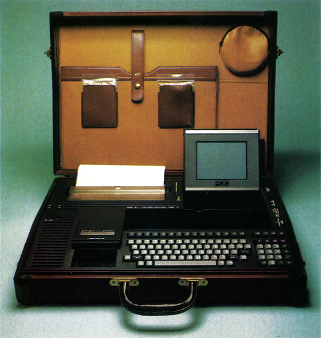

Gesucht: Der »Super C 64«

Es gibt nichts, was man nicht verbessern könnte, sogar der C 64 läßt sich durch verschiedene Erweiterungen und Umbauten zum Supercomputer aufrüsten. Als Beispiel haben wir eine echte Rarität für Sie aufgetrieben (Bild). In Deutschland entwickeltund von Siemens gebaut, bietet dieser C 64 einiges an Innovation und neuester Technik. Eingebaut in einen Koffer aus allerfeinstem Leder wurde der PDC Clipper für den Einsatz im Außendienst entwickelt. Dazu mußten sowohl Diskettenstation (3% Zoll), Plasma-Monitor und Thermodrucker in dem Gerät integriert werden.
Was beim PDC Clipper von Profis mitriesigem Aufwand und sehr viel Geld realisiert wurde, sollte nach unserer Meinung auch mit wesentlich weniger Aufwand möglich sein. Deshalb unser Aufruf an alle Selbstbau-Konstrukteure. Wirsind anIhren Ideen und Realisierungen interessiert. Zeigen Sie uns, wie Sie sich Ihren C 64 umgebaut haben. Dabei müssen Sie natürlich nicht ausschließlich auf eigene Entwicklungen zurückgreifen, es ist durchaus zulässig, verschiedene angebotene Erweiterungen mit einzubauen. Auch bei der Wahl des Gehäuses haben Sie vollkommen freie Hand — ob Sie nun eine Orangenkiste umbauen oder ein verchromtes Edelstahlgehäuse verwenden, alles ist zulässig. Bei der Beurteilung ist die Gesamtheit, die der Umbau darstellt, entscheidend. Das heißt Sieger unseres Wettbewerbs wird, wer in den Punkten Gehäuse, Einbauten, Nützlichkeit, technischer Innovation und Realisierung die beste Gesamtleistung erbringt.
Wie einsenden?
Natürlich brauchen Sie uns Ihren Computer nicht komplett in die Redaktion zu schicken. Es genügt, wenn Sie uns Fotos vom geschlossenen und geöffneten Gerät und, falls notwendig, auch von einigen interessanten Details einsenden. Dazu sollten Sie eine ausführliche Beschreibung der Veränderungen und Einbauten, in denen die Vorteile Ihres Gerätes erläutert sind, beifügen. Außerdem ist natürlich interessant, wieviel der Umbau gekostet hat.
Die ersten drei Gewinner unseres Wettbewerbes werden wir in unser Zeitschrift ausführlich vorstellen, außerdem laden wir den Sieger des Wettbewerbs, den wir mit500 Mark prämieren, nach München ein.
(aw)Schicken Sie Ihre Unterlagen unter dem Stichwort »C 64-Boliden« an:
Markt & Technik Verlag
Redaktion 64'er
Hans-Pinsel-Str. 2
8013 Haar bei München